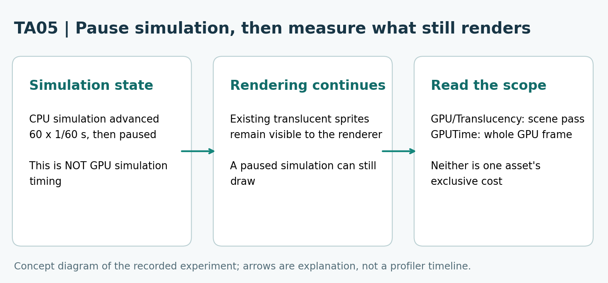
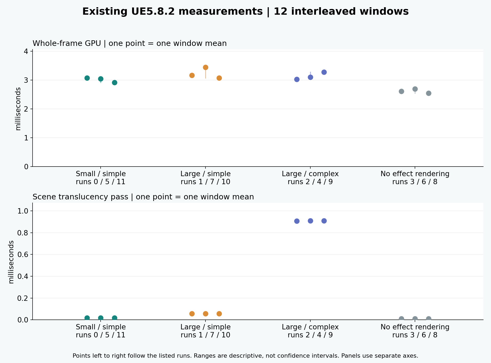
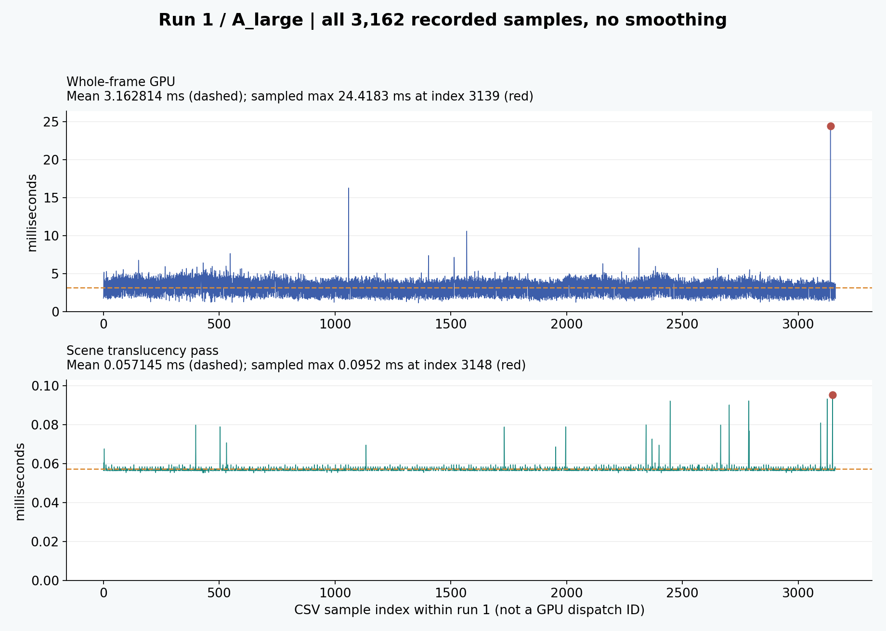

Niagara GPU profiling: distinguish render-pass cost from simulation | TA Practice Notes 05
By 77的技术美术实战. This is an independent teaching case, with AI-assisted code, wording and layout. All numerical observations below come from existing records; no new benchmark was run for this adaptation.
1. What are you actually measuring?
A large translucent effect can draw more slowly without adding particles. A whole-frame GPU number, a translucency-pass number and a simulation number answer different questions. First identify the scope of the number, then decide what comparison it can support.

Concept diagram, not measured timing: the recorded CPU simulation was paused while GPU rendering continued. Open the original image for small labels.2. Freeze one small comparison
Recorded environment: Windows, UE5.8.2, D3D11/SM5, RTX 4070 Laptop GPU, driver 560.94, 1280×720, FOV 50 and seed 77. The CPU simulation advanced 60 steps of 1/60 second and then paused. GPU rendering continued. The rendered cases had 88 active particles. Each window had five seconds of warm-up and approximately ten seconds of timing. Three interleaved repetitions of four conditions produced 12 windows and 40,353 sampled frames.
A_small uses sprite size 16 and the simple material. A_large uses size 80 with the same simple material. B_complex keeps size 80 and the opacity outline fixed while changing material work. Baseline_no_render hides the effect rendering; the background still has a cost. Compare the two A cases to investigate coverage at the stated particle count, and the large A/B cases to investigate material work under these controls.
A paused simulation does not mean the sprites stop being drawn. This is a static rendering comparison at about one second of system age, not a measurement of GPU particle simulation or dynamic gameplay. Configuration descriptions come from the original experiment record; the CSV values alone cannot independently prove every setting.
3. Read both scopes without adding them together
GPUTime covers the whole GPU frame. GPU/Translucency is a scene-pass measurement. Both are milliseconds, but they cover different work. A pass value is not one Niagara resource’s exclusive cost. Do not add a pass and its whole-frame total as independent costs, or turn a difference into a fixed FPS improvement.

Real per-window means. Each point is one window; vertical ranges are descriptive, not confidence intervals. Panels have separate labelled axes. Open the original image for small labels.Notice the limit of a simple “more material work means every total must increase” story: B_complex run 2 has a larger translucency-pass mean than A_large run 7, but its whole-frame mean is lower. Different scopes and window variability must remain visible. Neither the smallest window nor one whole-frame difference proves a universal resource ranking.
4. Keep every window visible
This table shows every recorded window in execution order. Means are rounded to six decimals for display; CSV precision is retained in the source. Twelve windows do not mean twelve machines, and the three repetitions are not a confidence interval.
5. A mean and a sampled maximum answer different questions
For one window, the mean is the sum of its valid samples divided by the sample count. The sampled maximum is the largest value actually recorded in that same window. Keep the metric and window fixed when comparing these summaries. A sampled maximum can identify a place to inspect; it does not establish the peak of a skill lifecycle that was not captured, or identify the cause of a spike by itself.

Real run 1 samples, without smoothing or dropping slow values. CSV sample indexes are not asserted to be GPU dispatch identities. Open the original image for small labels.6. Try the arithmetic on a small, explicitly labelled excerpt
The following are only the first eight GPUTime samples of run 1. Their result is an excerpt calculation, not the mean of the complete 3,162-sample window. The full-window mean in the table must use all its samples.
from statistics import fmean
samples_ms = [1.7572, 1.7572, 4.9469, 5.1937, 1.918, 4.2086, 3.4653, 2.0193]
print(fmean(samples_ms)) # 3.158275 ms, eight-sample excerpt
print(max(samples_ms)) # 5.1937 ms, excerpt maximum
When combining windows, a mean of window means and a mean over all sampled frames are different calculations if sample counts differ. Keep the counts and the calculation explicit. Here the windows remain separate. Debug overdraw colours were not converted into milliseconds.
7. Use a repeatable reading sequence
- Write down version, RHI, camera, resolution, simulation state and the comparison you intend to make.
- Choose the metric scope: scene translucency pass or whole GPU frame.
- Read all three windows for the condition, including the slower values.
- For a spike, preserve its window and sampled index; a timestamp alone does not identify a particle cause.
- State what changed, what stayed fixed, and what was not measured. If running your own experiment, use a new output directory and keep its records separate.
These records do not establish cross-machine behaviour, a universal noise bound, dynamic emission/lifetime behaviour, exclusive hardware conditions or GPU simulation cost. Configured particle count, actual count, debug colour and measured milliseconds are separate kinds of evidence.
Optional same-topic resources
Chinese full tutorial by the same author: TA Practice Notes 05: Niagara performance inspection. This page stands on its own; the link is optional background.
The method, worked excerpt, observations and complete window summary are on this page. The free resources below optionally let you inspect all original samples. The companion is a data reader, not a Niagara simulator; no account, Unreal installation or network is required after downloading its HTML.
Technical references and authorship
Technical terminology references: Epic Games, Measuring Performance in Niagara and Viewport Modes. The current public references describe profiling tools and debug views; they do not change this case’s frozen UE5.8.2 identity. This independent resource is not an Epic product or endorsement. It contains no paid-service or purchase link.